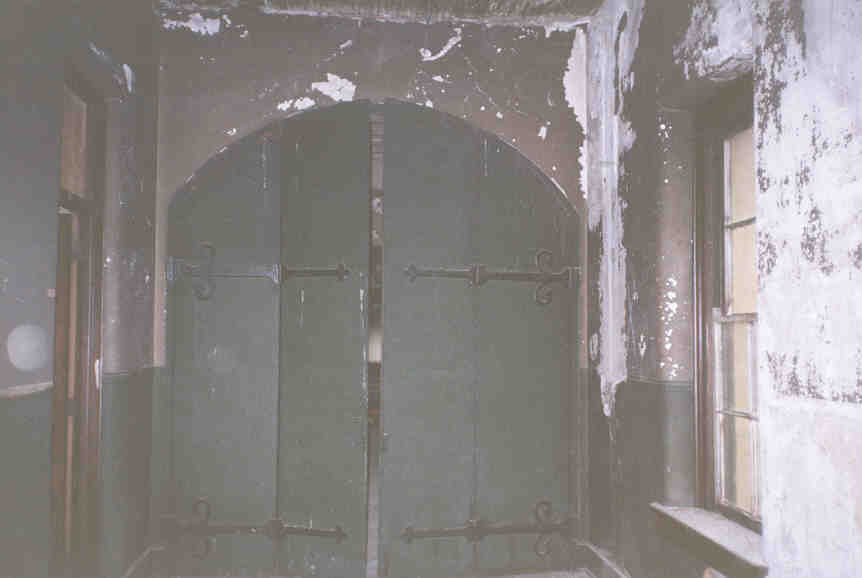
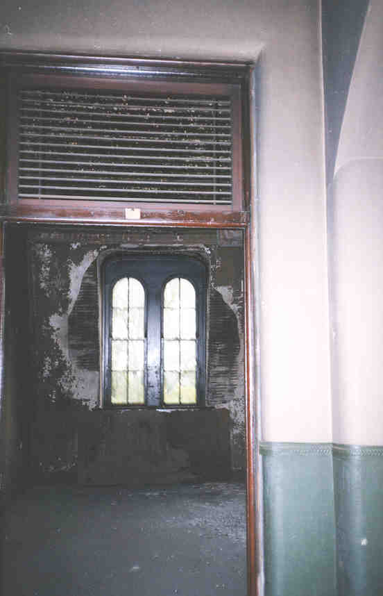

| The Sence provided an interesting view of the many different stages it has gone through. Because the State Highway Patroll only used the lower floors, the upper floors still look as I'm guessing they did back in the day so to speak. The picture to the left shows what the Highway Patroll hallways looked like. All of the others remain unremodeled. |
|
|  | The hallways all had doors in the intersections near the stairs. I seriously wonder if this was to preven Blind people from coming across an unexpected set of steps. It could have been just to control heat, or keep certain people away from others (boys and girls) at night. All I know is I want a house with doors like this. |
| Here is a view of the doors when they are open. Check out the paint on those walls. I don't know why someone would paint walls this dark, but it looks really cool. I suppose they could use a slight touch up. I will refrain from making a joke about who would complain about peeling paint in a blind school. (I really don't like making fun of anyone, laugh with, not at)! | 
|
 |
This is another view of that hot and smelly room that I mentioned before. There appeared to be some water damage here. Water seemed to have hit quite a few of the rooms in the building. Plaster and rain don't mix well, so there were a few places we were actually afraid to go in to for fear of being crushed by the ceiling. |
| The picture below is the room that I mentioned the narrow stairs I have no idea what the thing in the picture below is. It appeared to have steam going to it at one time, but the rooms all had heater registers. There is no way that this one room in the corner heated the massive building anyhow. Maybe it was for cooking. "Charlie" suggested a primative rowing machine, or maybe a sauna. hmmm! | 
|
|  | 
|
| The picture on the right doesn't really belong here, but its taken upright, so it fits. I just thought these were some neat doors. They were in a highway patroll part of the building. The picture on the left is of a cool door frame and cool windows in the old part. These rooms are on the south side of the building i think. |
{kind=link}
{kind=link}